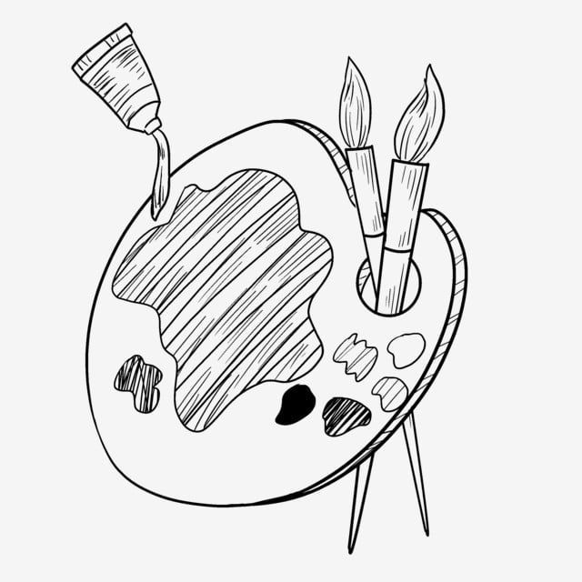
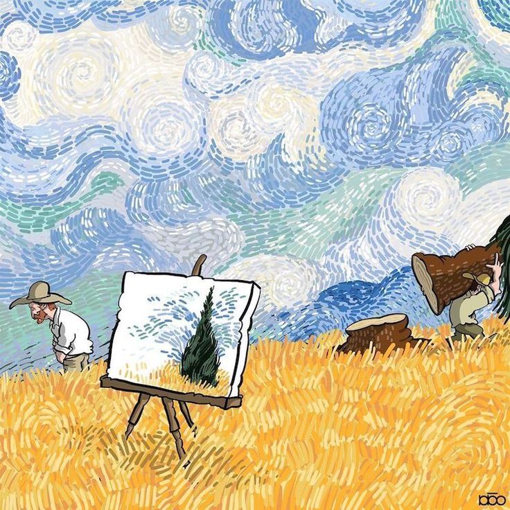

|
|
|
|
|---|
La Pintura
La pintura es una de las formas de arte visual más antiguas y expresivas. A través de los colores, las formas y las texturas, permite representar el mundo real, lo imaginario y lo emocional.
Desde las pinturas rupestres hasta las obras digitales contemporáneas, la pintura ha acompañado al ser humano como medio de comunicación y expresión.
Significado artístico
Más allá de lo visual, la pintura transmite ideas, historias y sentimientos. Cada obra refleja la visión del artista, su contexto social, político o personal.
Los estilos y técnicas han evolucionado con el tiempo: desde el realismo y el impresionismo hasta el arte abstracto y moderno.

La pintura como lenguaje
El arte pictórico permite una comunicación sin palabras. A través del color y la composición, se pueden transmitir emociones como la alegría, la tristeza, el amor o el caos.
Incluso una sola imagen puede provocar reflexión, memoria o inspiración en quien la observa.
Educación artística y pintura
En el entorno educativo, la pintura ayuda a desarrollar la coordinación motriz, la creatividad y la paciencia. También mejora la capacidad de observación y análisis.
Al crear, el estudiante se conecta consigo mismo, expresa su visión del mundo y encuentra un espacio de libertad personal.
